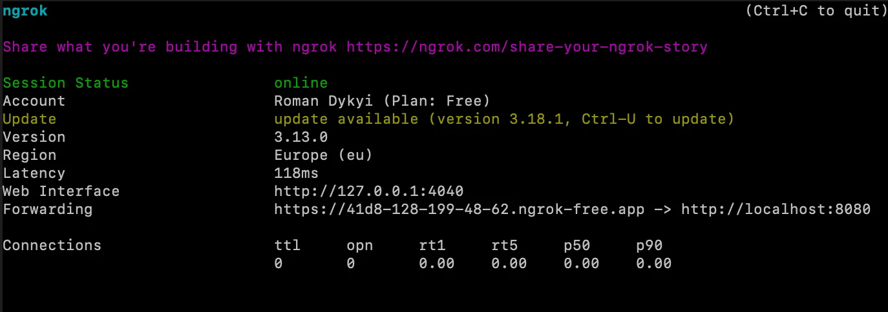
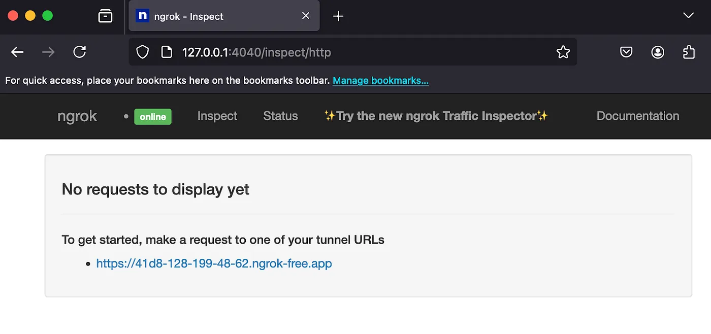

From Local Server to Public Access: The Best Tunneling Tools

🔔 Introduction
In software development, there are often situations where it's necessary to provide external access to a local server. This can be useful for various reasons: testing webhooks from external services, conducting client demonstrations, or collaborating with remote teams. Imagine you've developed an amazing web application, but it's only accessible on your local machine. How can you showcase it to friends, colleagues, or potential investors? In such cases, tunneling becomes a great solution. Tunneling services allow you to create a temporary public URL that redirects incoming traffic to the developer's local server. This enables you to test the application's functionality in an environment close to real-world conditions, without the need to deploy it on full-scale hosting or servers.
What is a local server tunnel?
A tunnel for a local server is a technology that connects a local host (e.g., http://localhost:8000) to a public URL accessible via the internet. The tunnel acts as an intermediary, redirecting all requests from the public address to your local server. This makes it a convenient tool for the following tasks:
- Working with APIs: Easily test and debug integrations with external services that send requests to your server.
- Testing webhooks: Many external APIs, such as payment gateways, notification systems, or messaging platforms, send event notifications via webhooks. With tunneling, you can quickly set up and debug these interactions without hosting the server publicly.
- Real-time demonstrations: Present your projects and new features without deploying them to external hosting.
- Remote collaboration: Share intermediate development results with colleagues and clients effortlessly.
How does tunneling work?
Tunneling is based on a simple yet effective mechanism. A tunneling service runs on your computer and creates a tunnel between your local server and the external world. When someone accesses the public link, the request is routed through the tunnel and instantly directed to your local server. This approach provides convenient access to your resources, enabling you to showcase and test web applications in their current state.
🔖 Use Cases
- Social Media Login: Integrating with social platforms (e.g., OAuth for Facebook, Google, or Twitter) often requires your server to be publicly accessible to handle responses after successful authorization.
- Payment Gateways: Payment systems like Stripe, PayPal, or LiqPay send transaction status notifications via webhooks. A tunnel allows you to quickly debug these notifications and ensure the data is processed correctly.
- Webhook Integrations: External services like GitHub, Slack, or Zapier use webhooks to notify about events (e.g., a new commit, channel message, or automation trigger). A tunnel enables you to receive these notifications in real time.
- Push Notifications: Debugging push notifications for mobile or web applications requires your server to accept and process external requests.
- Access to Third-Party APIs: Some APIs require verifying your server's availability (e.g., when sending data to a specified URL). Tunneling helps create public access for such verifications.
- Online Demonstrations: If you're showcasing a prototype or MVP to potential clients, colleagues, or investors, a tunnel allows you to quickly deploy the current application version for presentation purposes.
- Testing External Integrations: Working with external services that require your server to be accessible (e.g., email services or analytics systems) becomes easier with tunneling.
- Messenger Bot Development: When developing bots for Telegram, WhatsApp, or Facebook Messenger, you need to configure webhooks to receive messages. Tunneling allows you to quickly set up and test bot-server interactions.
- Debugging Notification Systems: Integrating with notification systems that require callback verification (e.g., SMS or delivery status notifications) involves testing with real requests, which can be facilitated through tunneling.
🔎 Popular Tunneling Tools
Let's take a look at some of the popular tools that allow you to quickly create a tunnel to a local server and make it accessible from the Internet.
Ngrok
Ngrok is one of the most well-known tunneling tools, allowing you to create a secure tunnel from a local server to the public internet.
Advantages: Supports HTTPS; Real-time request monitoring; Security features.
Disadvantages: The free version has limitations; Persistent domains are only available on paid plans.
Example usage: Running ngrok http 8000 will create a public URL that
redirects traffic to http://localhost:8000.
Localtunnel
Localtunnel is a simple and free open-source tool suitable for quick and temporary access to local servers.
Advantages: Free of charge; No registration required.
Disadvantages: Fewer features compared to Ngrok; URLs may not be persistent.
Example usage: Running lt --port 8000 will create a public URL for the
local port 8000.
Serveo
Serveo allows you to create a tunnel to a local server via SSH without needing to install a client.
Advantages: Easy to use through SSH; No installation required.
Disadvantages: Limited configuration options; Less support for advanced setups.
Example usage: Running ssh -R 80:localhost:8000 serveo.net will create a
tunnel through SSH.
Pagekite
Pagekite is a powerful and flexible tunneling tool that supports HTTP and SSH protocols.
Advantages: Supports persistent domains; Suitable for long-term projects.
Disadvantages: Paid plans are required for certain features; More complex setup compared to Ngrok or Localtunnel.
Example usage: After installation, Pagekite allows you to create persistent tunnels for various services.
Cloudflare Tunnel (before Argo Tunnel)
Cloudflare Tunnel (Argo Tunnel) allows you to securely connect a local server through the Cloudflare network.
Advantages: DDoS protection; Free tier available; High performance. Disadvantages: Requires configuration through Cloudflare; Some features are limited.
Example usage: Cloudflare provides detailed instructions for setting up a tunnel using
the cloudflared tool.
👀 Which tool to choose?
The choice of tunneling tool largely depends on the specific task and project requirements. If your goal is a quick demonstration of an application or testing webhooks, tools like Ngrok or Localtunnel are an excellent choice. These tools are easy to use and allow instant access to a local server via a public URL, making them ideal for short-term tasks and tests.
When it comes to long-term projects or situations where security and stability are especially important, it's worth considering Pagekite or Cloudflare Tunnel. These services offer more flexible and secure tunneling options, making them suitable for deploying applications with more stringent access and security requirements.
For users who prefer using SSH, Serveo is a good option. It is convenient because it doesn't require additional software installation. You simply use the standard SSH client to create the tunnel, making it a simple and effective solution for developers familiar with the command line and looking to minimize additional dependencies.
Now, let’s dive deeper into Ngrok and see how it works in practice.
Ngrok
Ngrok is a tool for developers that allows you to create secure tunnels from your local computer to the public internet. This is especially useful when you need to provide access to a local web server (for example, for testing webhooks, demos, or development) without deploying it on a real server.
Installation
Ngrok can be downloaded from the official website https://ngrok.com. The free version allows you to create one tunnel, while the paid version provides additional features such as persistent subdomains and higher performance.
Installation on macOS:
If you’re using macOS, you can install Ngrok with Homebrew (a package manager for macOS).
1. Open a terminal.
2. Run the following command to install Ngrok:
brew install ngrok
3. Once installed, you can verify Ngrok installation by running:
ngrok version
Installation on Linux:
1. Open a terminal.
2. Download the latest Ngrok release:
wget https://bin.equinox.io/c/4VmDzA7iaHb/ngrok-stable-linux-amd64.zip
3. Unzip the downloaded file:
unzip ngrok-stable-linux-amd64.zip
4. Move the ngrok binary to a directory in your PATH (e.g., /usr/local/bin):
sudo mv ngrok /usr/local/bin
5. Verify Ngrok installation:
ngrok version
Installation on Windows:
1. Go to the Ngrok website and download the Windows version of Ngrok.
2. Extract the downloaded ZIP file.
3. Move the ngrok.exe file to a folder of your choice (e.g., C:\ngrok).
4. Add the directory to your system’s PATH environment variable:
Right-click This PC (or Computer) > Properties.
Click Advanced system settings > Environment Variables.
Under System variables, find and select the Path variable, then click Edit.
Add the path to the Ngrok folder (e.g., C:\ngrok) and click OK.
5. Open a new Command Prompt window and verify the installation:
ngrok version
Authentication
Authenticating Ngrok with your account is optional but recommended after installation to unlock more features and avoid hitting usage limits.
1. Sign up or log in to your Ngrok account at https://dashboard.ngrok.com.
2. Copy your authtoken from the dashboard.
3. Run the command:
ngrok authtoken [your_authtoken]
Now you're ready to use Ngrok to create secure tunnels to your local server!
Main features
1. Creating tunnels: Ngrok allows you to create a tunnel to a local server, which is accessible via a
temporary public link (e.g., https://random-string.ngrok.io). By running Ngrok, you can share the
URL with others so they can access your local server.
2. Webhook support: Ngrok is often used for testing webhooks, as many APIs require a public URL to send data (e.g., payment systems, notification services, and others).
Security: Ngrok encrypts the connection via HTTPS and provides authentication options, enhancing security.
Request logging: Ngrok logs the requests and responses passing through the tunnel, which is useful for debugging and monitoring.
Example of use
1. Start a local server (for example, on `http://localhost:8000`).
version: '3.8'
services:
nginx:
image: nginx:latest
ports:
- "8000:80"
volumes:
- ./nginx.conf:/etc/nginx/nginx.conf:ro
- ./src:/var/www/html
networks:
- app_network
php:
image: php:8.3-fpm
volumes:
- ./src:/var/www/html
networks:
- app_network
networks:
app_network:
driver: bridge
2. In the command line, run the command:
ngrok http 8000
In the result, you will see:
Ngrok will provide a public URL (https://41d8-128-199-48-62.ngrok-free.app), which will now direct traffic to your local server, and a local URL (http://127.0.0.1:4040), which will now display the server’s responses.
4. To interact with an external API, we need to create two routes:
api/test — this route will receive data from the client and send a request to the external server.
api/webhook — this route will receive the response from the external API when it returns data after processing.
namespace App\Presentation\Api\Action;
use Symfony\Component\HttpFoundation\Request;
use Symfony\Component\HttpFoundation\JsonResponse;
use Symfony\Component\Routing\Annotation\Route;
final class ApiTestAction
{
#[Route('/api/test', name: 'api_test', methods: ['GET'])]
public function __invoke(Request $request)
{
$callbackUrl = $request->query->get('callback_url');
if ($callbackUrl) {
$this->sendRequestToExternalApi($callbackUrl);
return new JsonResponse(['status' => 'success', 'message' => 'Request sent successfully.']);
}
return new JsonResponse(['status' => 'error', 'message' => 'callback_url is required.'], 400);
}
private function sendRequestToExternalApi($callbackUrl)
{
// Logic for sending the request to the external API
}
}
namespace App\Presentation\Api\Action;
use Symfony\Component\HttpFoundation\Request;
use Symfony\Component\HttpFoundation\JsonResponse;
use Symfony\Component\Routing\Annotation\Route;
final class ApiWebhookAction
{
#[Route('/api/webhook', name: 'api_webhook', methods: ['POST'])]
public function __invoke(Request $request)
{
$data = json_decode($request->getContent(), true);
return new JsonResponse(['status' => 'success', 'message' => 'Data received.']);
}
}
5. Example request using curl
To test the api/test route, we can send a request using curl. For example, if you want to pass a
callback_url that points to your local server via Ngrok:
curl -G "http://localhost:8080/api/test" --data-urlencode "callback_url=https://41d8-128-199-48-62.ngrok-free.app/api/webhook"
Domains
Domain objects enable you to create Endpoints to listen for traffic on those domain names. Domains may be a subdomain of an ngrok-managed base domain like foo.ngrok.app or you can bring your own branded domain like foo.example.com. Read more detailed you can here.
You can start from a free plan and receive a public URL: https://wildly-pro-guinea.ngrok-free.app.
HTTPS
If HTTP alone isn’t sufficient for your needs, use the following command to set up a redirect to HTTPS.
ngrok http --url=wildly-pro-guinea.ngrok-free.app {YOUR_PORT_NUMBER}
🏁 Conclusion
Tunneling services are a great way to temporarily provide access to a local server without worrying about complex network configuration. Whether you want to test webhooks, share your application with your team, or showcase a prototype to clients, there are many tools that simplify this task. Try out a few options and choose the one that best suits your project.
That’s it 🎉, thanks for reading!